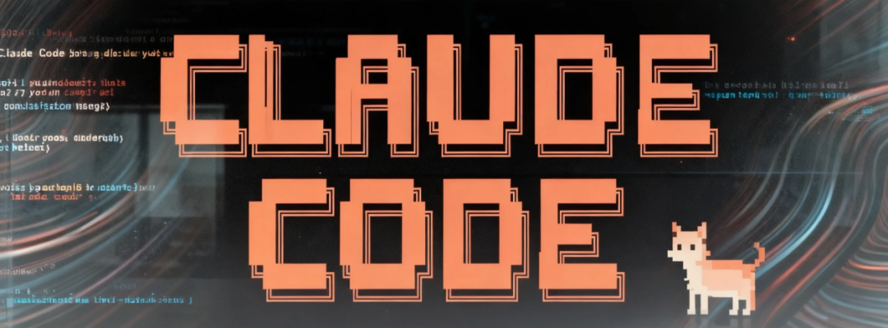

Claude Code 的更新速度大概是目前所有AI编程工具里最疯的，快到你根本跟不上。
最近有几波改动直接影响日常工作流，值得专门拎出来讲。我尽量在教程里覆盖这些变化，但有些功能太小、太碎，单独成篇有点浪费，打包在一起反而合适。
下面这6个功能散落在最近几次更新里，前后也就隔了几天。
1 /powerup 在终端里上课
输 /powerup，Claude Code 会弹出一堆交互式课程。
/powerup用方向键和回车导航。选课程、看动画演示、进下一课。
涵盖的内容很实在：
• 上下文管理（Claude 怎么读你的代码库） • 权限模式（ask / auto-edit / full auto 的区别） • /compact命令和压缩机制• Hooks 和自动化 • 子代理和并行工作流 • 自定义斜杠命令 • CLAUDE.md项目记忆文件• MCP 服务器集成
每节课结构简单：讲概念、动手练、进下一个。
我全刷完了。以我的经验，居然还能学到新东西。如果你是新手，这是最好的起点。
2 /cost 终于能看到钱花哪了
用订阅计划的话，这功能现在才有价值。
以前 /cost 只甩给你一个token总数，没细分。你不知道哪个模型在烧钱，缓存帮你省了多少钱也完全看不到。
现在它显示：
• 按模型拆分（Opus / Sonnet / Haiku） • 缓存命中率 • 输入输出token占比
/cost如果你会话里切过模型，这很关键，Opus 烧配额的速度比 Sonnet 快得多。知道各自消耗多少，才能决定什么时候该用 /model 切回去。
缓存命中率同样有用。Claude Code 重度依赖提示词缓存，命中率低就是在多花钱：
• 命中高 = Claude 在高效复用上下文 • 命中低 = 有东西在搞废你的缓存，可能是文件切太勤，或者上下文变动太大
用API计费的，这些数据一直在 Anthropic 控制台里能看到。订阅用户直到现在都是两眼一抹黑。
3 /release-notes — 交互式版本选择器
以前输 /release-notes，迎面一堵文字墙。你得狂滚找某个版本改了啥。
现在是交互式选择器：
/release-notes方向键选版本，回车确认。跳过了几次更新、想专门看 2.1.89 改了什么？直接跳过去。
4 /feedback 现在告诉你为什么不能用
以前有个坑：如果你的账户类型不是订阅的，/feedback 会从菜单里直接消失。你输命令，没反应，也不知道为啥。
现在修好了：
/feedback用API计费而不是订阅的，它会明确告诉你：反馈功能仅限订阅用户。
5 CLAUDE_CODE_NO_FLICKER=1 终端终于不闪了
如果你用 Claude Code 时终端狂闪，这就是解药。
闪烁的根源是渲染方式：每次更新，Claude Code 都会清屏重绘。快速更新 + 全屏重绘 = 闪瞎眼。
写代码的时候最惨，Claude 逐行生成函数，每多一行就触发一次重绘。
有人忍这问题忍了好几个月。能用，但盯8小时不是人过的日子。这也是我讨厌 Gemini CLI 的原因，早期测试就发现这毛病。
Anthropic 终于修了：
CLAUDE_CODE_NO_FLICKER=1 claudePowerShell 版：
$env:CLAUDE_CODE_NO_FLICKER=1; claude启用虚拟视口渲染，避开原始终端重绘。
怎么启用
方案一：一次性
CLAUDE_CODE_NO_FLICKER=1 claude方案二：永久生效
zsh（macOS默认）：
echo 'export CLAUDE_CODE_NO_FLICKER=1' >> ~/.zshrc
source ~/.zshrcbash：
echo 'export CLAUDE_CODE_NO_FLICKER=1' >> ~/.bashrc
source ~/.bashrc建议永久设置。试过就回不去了。
6 /buddy 终端里养了个看门的
4月1号发的。大多数人以为是玩笑。
输 /buddy，一个ASCII小生物会在提示符旁边孵化出来。有名字、有个性、会围观你写代码。
/buddy它坐在旁边，对你的操作有反应。Debug到抓狂时可能鼓励你两句，也可能阴阳你。
结语
Anthropic 发更新的速度，没人跟得上。
这6个改动分散在多个版本里，前后就几天。我最常用的是 /powerup 和 NO_FLICKER，不用出终端就能学功能，省时间；不闪屏，省眼睛。/cost 明细让订阅用户终于看清谁在偷吃配额。/buddy 我本以为鸡肋，但长时间会话里有个伴，终端确实没那么冷冰冰了。
还没升到的，建议更新一下。买不了吃亏，买了不了上当。